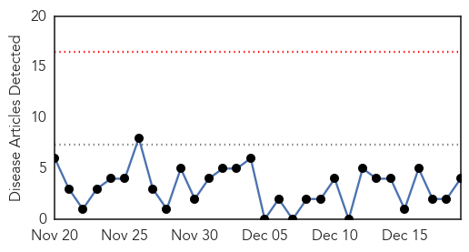
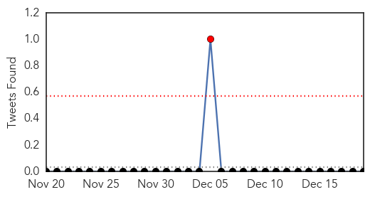

Dengue Fever
30-Day Web Trend
0 alerts, 0 warnings

30-Day Twitter Trend
0 alerts, 0 warnings

Article Locations

Article Confidences

Top Articles:
Top Tweets:
-
No tweets found for Dec 19, 2014
Swine Flu
30-Day Web Trend
4 alerts, 0 warnings
30-Day Twitter Trend
1 alerts, 0 warnings

Article Locations
Article Confidences
Top Articles:
- 0.986
- No shortage of swine flu drugs, says Rajaiah
- 0.985
- Three die of swine flu in Hyderabad, toll reaches eight
- 0.968
- Kovai Woman 1st Swine Flu Victim This Year in State
- 0.967
- Cool Springs' Diatherix nets second FDA contract
- 0.943
- Fresh case of swine flu reported in Hyderabad
- 0.933
- 40-year-old woman with swine flu dies in private hospital
Top Tweets:
-
No tweets found for Dec 19, 2014